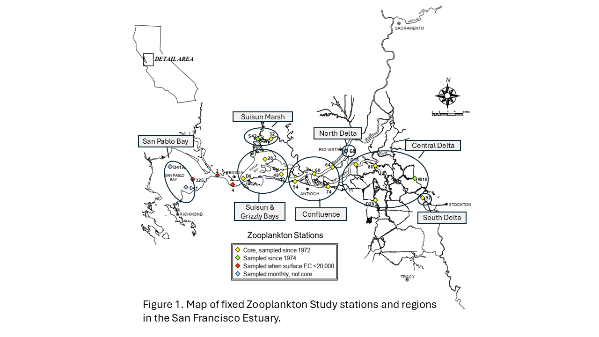
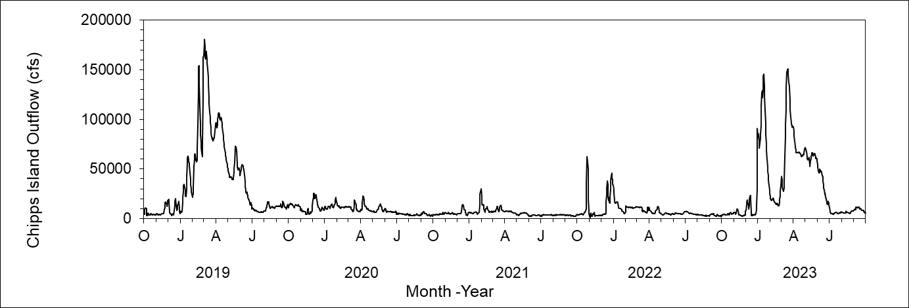
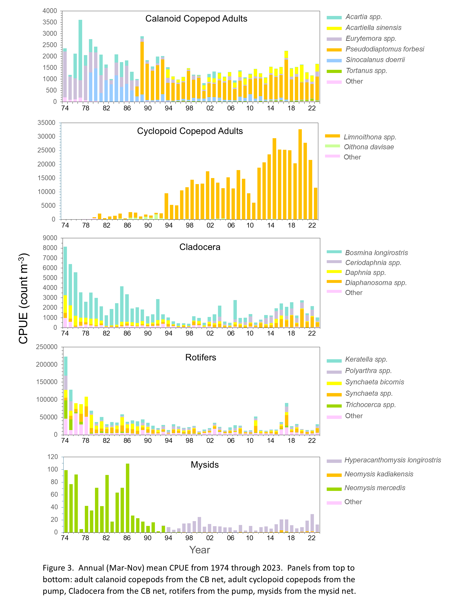
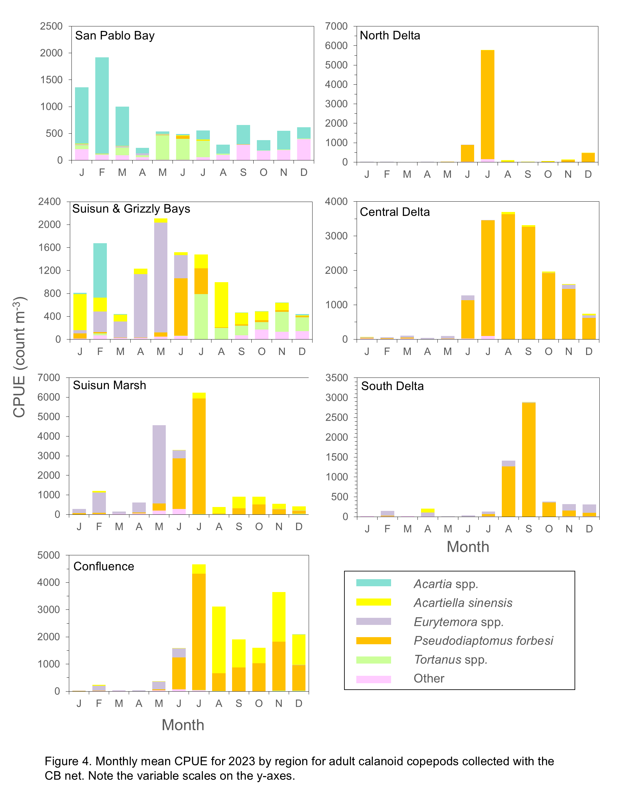
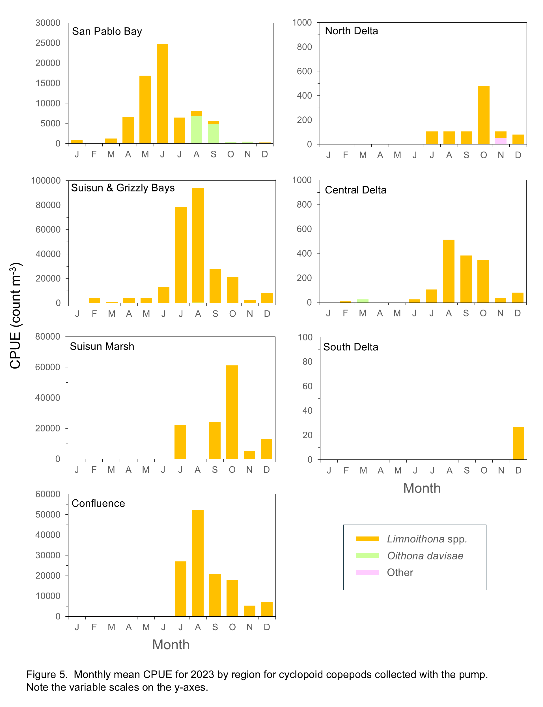
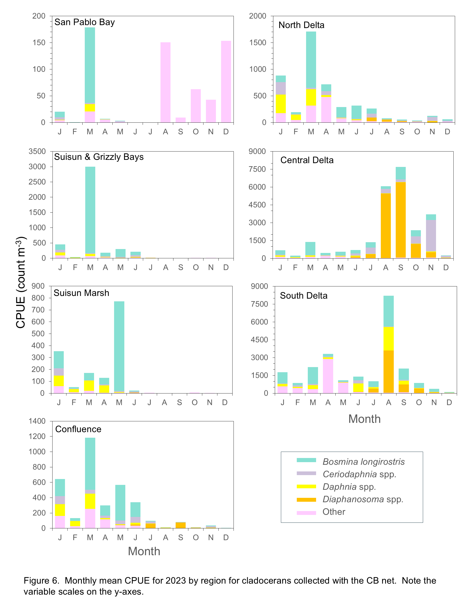
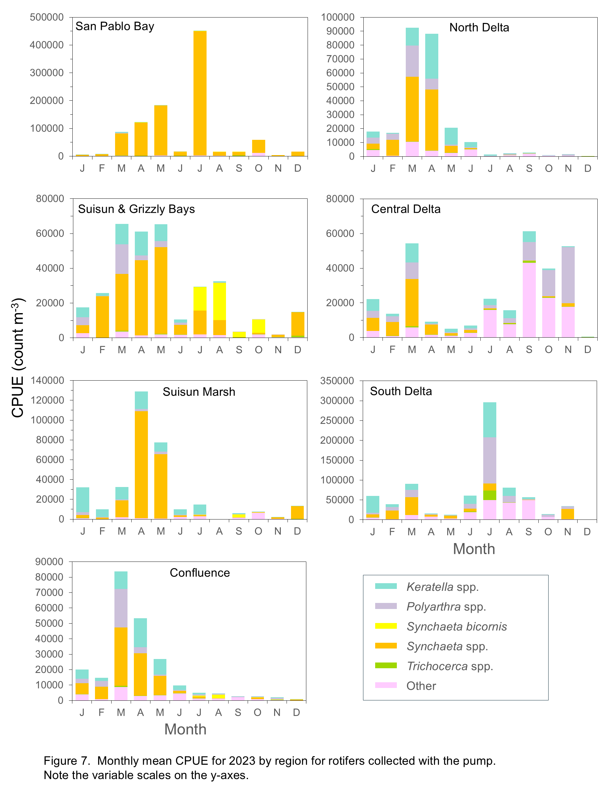
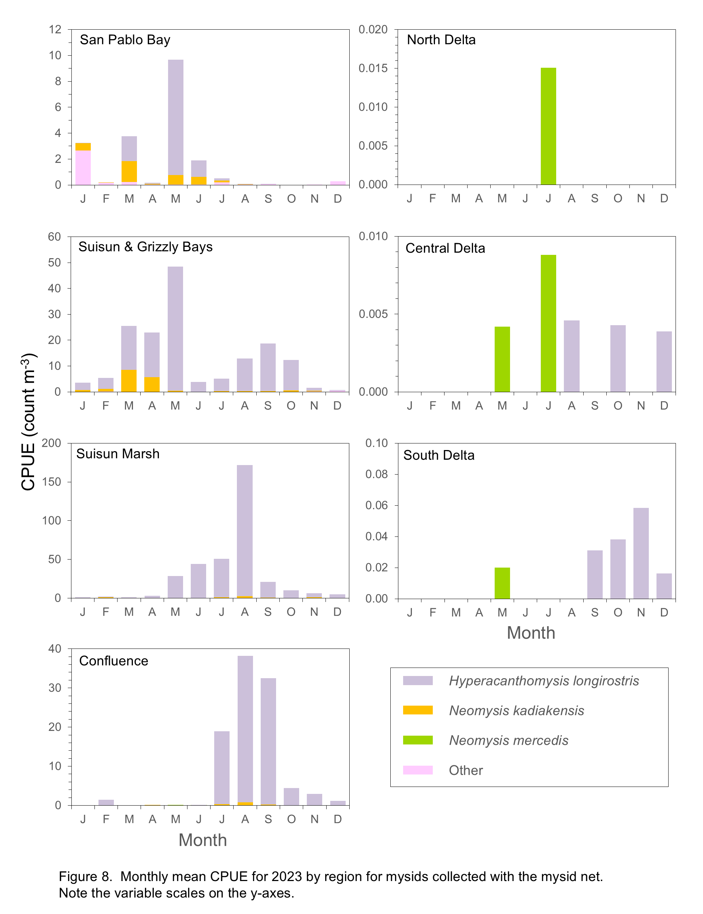

Zooplankton Report
Introduction
This report presents zooplankton annual and monthly abundances and distribution trends from 1974 through 2023 for the most common copepods (calanoid and cyclopoid), cladocerans, rotifers, and mysids of the upper estuary.
Methods
Zooplankton have been sampled since 1972, once or twice per month from March to November through 1994, and monthly from 1995 to the present, except during the COVID-19 pandemic, which precluded sampling in March and April 2020 and from December 2020 to February 2021. Samples are collected at 20 fixed stations and up to four floating stations representing the entrapment zone in the upper SFE (Figure 1) using three gear types that target different size ranges of zooplankton: utility pump (1/10 hp, 12V) samples filtered through a 43-micron mesh net for micro-zooplankton (rotifers, copepod nauplii, and small cyclopoid copepods); Clarke-Bumpus (CB) net with 160-micron mesh to sample meso-zooplankton (cladocerans and most juvenile and adult calanoid copepods); and mysid net with 505-micron mesh targeting mysid shrimp and other macro-zooplankton. The mysid and CB nets are mounted on the same tow sled and samples are collected in a 10-minute stepped oblique tow over the depth range of each station.
Catch per unit effort (CPUE) is calculated using the volume of water filtered during a net tow. Volume filtered during mysid and CB tows is determined using a General Oceanics flowmeter mounted in the mouth of each net and calculated as:
\[V=(endmeter−startmeter)k∗a\]
where V is the volume of water sampled (mL), k is the flow meter constant, and a is the area of the mouth of the net (m2).
The pump samples 19.8 gallons over the upper 30’ of the water column, filtered through a 43-micron mesh net. All zooplankton samples are preserved immediately after collection in 10% formalin with rose bengal dye. Target organisms in each sample are identified and counted in the laboratory using dissecting microscopes. More information about the sampling and processing methods can be found in the metadata here.
Abundance indices are calculated for each organism from its target gear type (noted above). Abundance is reported as mean CPUE, calculated as the number of each organism collected per cubic meter of water sampled:
\[CPUE=s∗V^{−1}\]
where s is the estimated count of the target organism in the sample.
Calanoid and cyclopoid copepod abundance indices reported here comprise adults only, as juveniles cannot always be identified to species. Annual and monthly abundance indices were calculated using 16 fixed stations sampled consistently since 1974 (Figure 1) and 2 to 4 non-fixed entrapment zone (EZ) stations, located where bottom specific conductance was 2 and 6 millisiemens per centimeter (approximately 1 and 3 psu). Note that the number of EZ stations varied as the location of an EZ station may have overlapped with a fixed sampling station.
To analyze long-term trends (1974 to present), annual abundance indices were calculated as the mean CPUE for samples collected from March through November, as winter sampling was inconsistent before 1995. Monthly abundances from 2023 are also shown by regions, as detailed in each section below. Estuary regions are designated as San Pablo Bay (stations D41, D41A, 325), Suisun & Grizzly Bays (stations 2, 4, D6, 28, 48), Suisun Marsh (stations 32, S42), Confluence (stations 54, 60, 64, 74), Central Delta (stations D16, D19, 86, D28, M10), North Delta (68), and South Delta (92) (Figure 1). Non-fixed EZ stations were assigned to a geographic region based on their location, which was most often in the Confluence region in 2023, with a few in the Central Delta and North Delta, usually during fall and early winter. In September and December of 2023, two EZ stations were sampled in the San Joaquin River in addition to the two EZ stations in the Sacramento River. Annual indices include data from the 16 core stations and the two Sacramento River EZ stations. Monthly CPUE by region for 2023 includes data from all fixed and non-fixed EZ stations.
2023 Conditions
Water year 2023 was characterized by a series of strong atmospheric river storms in winter, resulting in substantially increased freshwater outflow through the delta (Figure 2). This high outflow likely transported many of the small zooplankton targeted by this study out of upper estuary regions, leading to reduced abundances of some taxa in winter and early spring in the upper estuary and presence of these taxa further downstream of what is considered to be their typical distribution.

Trends
The overall abundance of zooplankton in the estuary has decreased significantly over the course of the Zooplankton Study (Figure 3). Cyclopoid copepods are the only group that has increased in abundance over the study period, driven by the invasion and spread of Limnoithona tetraspina. The overall decrease in zooplankton abundance can be attributed to invasive species colonizing the estuary, most notably the Asian clam Potamocorbula amurensis in the mid-1980s (Kimmerer et al. 1994; Carlton et al. 1990). Abundances of both phytoplankton and zooplankton in the upper estuary have been impacted by the proliferation of P. amurensis, as it is a highly efficient filter feeder and consumes phytoplankton and small zooplankton, including copepod nauplii. In addition to decreased abundance of most zooplankton groups, community compositions have changed dramatically during the study period, driven by a combination of the introduction and spread of non-native species and changes in the abiotic and biotic environments.

Calanoid Copepods
Adult calanoid copepod abundance declined only slightly over the study period, but their community composition changed dramatically (Figure 3). When the study began in the early 1970s, the calanoid copepod community was dominated by Acartia spp and an introduced species in the genus Eurytemora (initially identified as E. affinis (Esterly 1924), now considered E. carolleeae (Alekseev & Soussi 2011), referenced in this report as Eurytemora spp.). Even though Eurytemora spp. is not native, it was once the primary prey of the endangered Delta Smelt. However, as its abundance declined, fish increasingly preyed on more recently introduced calanoids like Pseudodiaptomus forbesi (Moyle et al. 1992; Slater and Baxter 2014).
One of the first recorded calanoid copepod introductions was Sinocalanus doerrii, a freshwater species native to China that invaded the estuary in 1978 and remained the most dominant calanoid species for a decade (Orsi et al. 1983). The calanoid P. forbesi was first detected by this study in October 1987 (Orsi and Walter 1991), shortly after the Potamocorbula amurensis invasion in the mid-1980s (Kimmerer et al. 1994; Carlton 1990). Combined effects of these introductions may have influenced subsequent abundance declines of E. affinis and S. doerrii. P. forbesi quickly became the numerically dominant calanoid in the upper estuary and remains the most abundant to this day. The predatory calanoid copepod Acartiella sinensis was introduced in 1993 and soon became the second most abundant calanoid in the upper estuary, dominating the low-salinity zone in the Suisun Marsh and Confluence regions (Orsi and Ohtsuka 1999). This invasion appears to have narrowed the range of P. forbesi towards freshwater areas of the estuary, potentially in relation to A. sinensis predation on P. forbesi nauplii (Kayfetz and Kimmerer 2017).
Aside from the 25-year high in calanoid copepod abundance in 2017, total abundance was similar from 1995 to 2023 (Figure 3). After declines in 2021 and 2022, total abundance of calanoid copepods increased in 2023 to essentially the same level as 2020, but with higher proportion of P. forbesi and lower proportion of A. sinensis (Figure 3)
Distribution of calanoids throughout the estuary in 2023 differed from recent years, likely in response to increased outflow in winter and spring of 2023 (Figure 2). Calanoid abundances, including Eurytemora spp., were very low from January through May in the upstream regions of the Delta (South, Central, and North Delta, and Confluence) (Figure 4), in contrast with seasonal distribution patterns from the drought years 2020 through 2022 that showed Eurytemora spp. as the most common calanoid taxon in these regions in spring (see link in Reference section to zooplankton annual reports 2013-2022). Similar to recent years, Pseudodiaptomus forbesi was dominant in these regions but abundances were low until June or July whereas in prior years abundances increased starting in March. P. forbesi inhabits low salinity waters so this species is typically rare in downstream regions but was fairly abundant in June and July in Suisun Marsh and Suisun and Grizzly Bay and even present in San Pablo Bay in June. P. forbesi was abundant in the North Delta in July but calanoids were low in all other months in this region. In the Confluence region, P. forbesi abundance was high in July and decreased in subsequent months in the presence of increasing numbers of the predatory Acartiella sinensis (Figure 4). Abundance of A. sinensis was highest in the Confluence region in August, and also increased starting in August in the Suisun Marsh and Suisun and Grizzly Bay regions. In these three regions, A. sinensis co-occurred with high densities of one of its primary prey items, Limnoithona tetraspina (Figure 5). P. forbesi abundance was high in Suisun Marsh in June and July 2023 in contrast with low abundances in this region during the drought years from 2020 through 2022 (see link in Reference section to previous zooplankton annual reports).
There is a marked difference in the calanoid community in the lower reaches of the estuary when compared to the Delta. Acartia spp. was the only native calanoid commonly found in 2023. These copepods prefer brackish water and were present year-round in San Pablo Bay, though monthly abundances were highly variable (Figure 4). In Suisun and Grizzly Bays, Acartia spp. were abundant only in February, while Eurytemora spp., which are typically rare in this region, were abundant from February through June. In 2022 Tortanus spp. were abundant in this region throughout the year (see link in Reference section to previous zooplankton annual reports), but in 2023 they were essentially absent until June (Figure 4). Tortanus spp. abundances are typically low in San Pablo Bay but comprised over 80% of the copepod community in May and June 2023 and over 50% in July 2023.

Cyclopoid Copepods
In contrast with the general decline of most zooplankton groups during the study period, adult cyclopoid copepods increased dramatically, particularly from 2012 to 2022 (Figure 3). However, in 2023 cyclopoid copepod abundance declined to about half the average for the previous decade (Figure 3), likely in relation to these small organisms being transported downstream from the upper estuary by high freshwater outflow during the early part of 2023 (Figure 2).
Abundances of Oithona spp. and Acanthocyclops copepods were very low when the study began (Figure 3), and the increase in cyclopoid abundance resulted from the introduction of Limnoithona sinensis in the early 1980s and subsequent identification of the invasive Limnoithona tetraspina in 1993 (Ferrari and Orsi 1984; Orsi and Ohtsuka 1999). These two species were reported together as Limnoithona spp. from 1980 through 2006. Limnoithona were identified to species starting in 2007, leading to the discovery that L. tetraspina is by far the dominant species. In 2023, L. tetraspina comprised 99.9% of all Limnoithona collected. For the sake of consistency, abundances are combined and reported here as Limnoithona spp. In 2023, Limnoithona spp. was by far the most abundant copepod group collected by this study (Figure 3).
The increase in L. tetraspina abundance may be related to decreased predation due to the decline of Northern Anchovy in the upper SFE (Kimmerer 2006). In addition, the small size, high growth rate, and motionless behavior of L. tetraspina may decrease its vulnerability to predation in a region where most fish are visual predators (Bouley and Kimmerer 2006, Kimmerer 2006). The introduction of L. tetraspina is linked to P. forbesi distribution shifting out of the low-salinity zone of the estuary, as higher densities of L. tetraspina may sustain larger populations of the predatory A. sinensis, which also preys on P. forbesi nauplii (Kayfetz and Kimmerer 2017).
Although Limnoithona spp. were the most abundant cyclopoids in 2023, their distributional patterns differed from previous years. From January through May cyclopoids were essentially absent from all regions of the estuary except Suisun and Grizzly Bays and San Pablo Bay (Figure 5) and abundances remained low in the South, Central, and North Delta regions throughout the year. Limnoithona spp. abundances increased in the Confluence, Suisun Marsh, and Suisun and Grizzly Bay regions starting in July (Figure 5) and monthly patterns were similar to those of P. forbesi in these regions. In previous years Limnoithona spp. have been virtually absent from San Pablo Bay, but were abundant in spring and summer in 2023, and declined starting in August with increasing abundance of the introduced Oithona davisae, typically the most abundant cyclopoid in this region (Figure 5).

Cladocerans
Cladocerans in the upper estuary primarily comprised species in the genera Bosmina, Daphnia, Ceriodaphnia, and Diaphanosoma. Their populations have declined substantially during the study period (Figure 3), although there has been somewhat of an increasing trend since the late 1990s. Cladocerans are largely herbivorous and feed primarily on phytoplankton, so likely were impacted by the invasion of P. amurensis (Baxter et al. 2008; Greene et al. 2011, Kratina and Winder 2015). Throughout the upper estuary, cladocerans comprise a significant portion of Delta Smelt and juvenile Chinook Salmon diets (Slater and Baxter 2014; Goertler et al. 2018) and were historically an important food source for young-of-the-year Striped Bass (Heubach et al. 1963). Increased abundances of invasive copepods such as P. forbesi and the declines in native cladocerans may alter the nutritional content of the planktonic prey available to fish (Kratina and Winder 2015).
In the early years of the study, the cladoceran community was dominated by Bosmina longirostris and Daphnia spp (Figure 3). Over the last decade, the cladoceran community shifted to higher proportions of Ceriodaphnia spp. and Diaphanosoma spp., although B. longirostris and Daphnia spp. are still present (Figure 3). Cladoceran abundance declined in 2023, with Diaphanosoma spp. and B. longirostris the most abundant taxa (Figure 3).Cladoceran abundances in the early months of 2023 were higher than during the same period in 2022 (see link in Reference section to previous zooplankton annual reports) in all regions except the South and Central Delta, with Bosmina longirostris the dominant species (Figure 6). Increased downstream distribution of cladocerans is consistent with high outflow conditions (Figure 2). Abundances in downstream regions decreased by late spring and early summer and increased in the South and Central Delta regions in August (Figure 6), though maximum abundances in 2023 (maximum CPUE ~8,000) were quite a bit lower than in 2022 (maximum CPUE ~30,000). In the South and Central Delta, low abundances of cladocerans in the early months of the year comprised B. longirostris, Daphnia spp. and the “other” category. In August, Diaphanosoma abundances were high in the South Delta along with B. longirostris and Daphnia spp. Diaphanosoma abundances were also high in the Central Delta in August and September, along with smaller numbers of B. longirostris and Ceriodaphnia. In the Confluence and North Delta, abundances were highest January through May and comprised all taxa except Diaphanosoma, while summer abundances of all taxa were very low but Diaphanosoma were present (Figure 6). In Suisun and Grizzly Bays and Suisun Marsh, cladocerans, largely B. longirostris, were present in winter and spring months but all taxa were essentially absent after June. In San Pablo Bay cladoceran abundances were low throughout the year, with B. longirostris collected in March but not abundant relative to the upstream regions, all taxa essentially absent May through July, and only “Other Cladocera” present starting in August.

Rotifers
Although rotifers are the most abundant type of zooplankton in the upper estuary, their abundance decreased dramatically since the start of the study (Figure 3). However, rotifer abundance increased in 2023 relative to the previous few years (Figure 3). Interestingly, the decline in rotifer abundance began in the late 1970s, preceding the invasion by P. amurensis (Cloern and Jassby 2012). The rotifer community comprises species from the genera Polyarthra, Synchaeta, Keratella, and Trichocerca, as well as the “other” rotifer category, which includes the genus Asplanchna.
Rotifer abundance increased in 2023 after several years of very low abundances, to a level similar to 2019 (Figure 3). Synchaeta spp. were the most abundant, with smaller numbers of Synchaeta bicornis, Polyarthra spp. and Keratella spp. (Figure 3). Keratella and Polyarthra tended to be most abundant in freshwater and low-salinity regions (Figure 7), their preferred habitats (Winder and Jassby 2011). Increased abundances of these taxa in Suisun Marsh and Suisun and Grizzly Bays in the winter and spring of 2023 suggest fresher than usual conditions, though Synchaeta spp. co-occurred with them in all regions including San Pablo Bay. A spatial and temporal split was discernible between Synchaeta and the other rotifer groups, with highest densities of Synchaeta spp. in Suisun Marsh, Suisun and Grizzly Bays, and San Pablo Bay during winter and spring months. There was a noticeable increase in S. bicornis abundance in July in Suisun and Grizzly Bays, though Synchaeta spp. were also present. The “other” rotifers group was most abundant in the South and Central Delta during summer (Figure 7).

Mysids
Mysid abundances were higher overall during the first 12 years of the Zooplankton Study, with the highest abundance in 1986 (Figure 3). Annual abundances have varied from 2.1 to 29.4 (mean 12.3) from 1987 to present, with the 2023 annual CPUE of 13.1 about half that of 2022 (Figure 3) but slightly higher than the mean over this period. In addition to an overall decline since the inception of the study, the community composition shifted dramatically. Prior to 1994, the native Neomysis mercedis was the most abundant species but since 1994 the mysid community has been dominated by the introduced Hyperacanthomysis longirostris (formerly Acanthomysis bowmani) (Figure 3). N. mercedis declined significantly during the 1976-1977 drought, likely related to food limitation from a lack of diatoms due to low river discharges (Siegfried et al. 1979; Cloern et al. 1983). N. mercedis populations rebounded after the drought and abundances remained high in the Suisun Bay region until the introduction of P. amurensis in the mid-1980s, after which their numbers declined dramatically and remained low (Orsi 1999). The mysid community in 2023 was dominated by H. longirostris, along with a small proportion of Neomysis kadiakensis. H. longirostris remained the most common mysid in the upper estuary, while the abundance of the once dominant native species N. mercedis remained low, continuing the overall trend in mysid community composition since 1994.
The introduced mysid H. longirostris was first detected by this study in 1993, shortly after the decline of N. mercedis. Although H. longirostris quickly became the most common mysid in the system, total mysid abundances have not returned to their pre-clam (Potamocorbula amurensis) invasion levels (Modlin and Orsi 1997, Figure 3). Historically mysids have been critically important in the diets of many fish species in the upper SFE, including Delta Smelt, Longfin Smelt, Striped Bass, and Chinook Salmon (Moyle et al. 1992; Feyrer et al. 2003; CDFG 2009; Goertler et al. 2018). The decline of mysids in the upper estuary led to a significant decrease in their presence in fish diets (Feyrer et al. 2003).
In 2023 H. longirostris, was most common in the low-salinity zone of Suisun Marsh (Figure 8). Although abundances of the native N. mercedis remain very low, representatives of this species were found in all regions except Suisun and Grizzly Bays in 2023. Mysids were moderately abundant in the Confluence region from July to September. From January through April, mysids were essentially absent from all regions except Suisun and Grizzly Bays and San Pablo Bay, likely due to very high freshwater outflow (Figure 2). Aside from high abundances in Suisun Marsh in August and Suisun and Grizzly Bays in May, mysid abundances were low in all regions in other months. The mysid community in San Pablo Bay typically comprises the “other” species (Acanthomysis aspera, Acanthomysis hwanhaiensis, and Alienacanthomysis macropsis) but in 2023 the “other” group was essentially absent except in January. H. longirostris and N. kadiakensis were the predominant species from March through June, and all mysids were largely absent after July (Figure 8). Note that this study samples only the upper portion of San Pablo Bay, so these findings do not represent mysid community dynamics in other areas of San Pablo Bay.

Conclusion
In 2023, the Zooplankton Study recorded calanoids, cladocerans, rotifers, and mysids at abundances consistent with the historic downward trends in the estuary. There were clear effects of high freshwater outflow on zooplankton distribution patterns during the early months of 2023. Abundances of all zooplankton groups peaked in summer of 2023, and rotifer abundances were also high in spring (March to May). The small, introduced Limnoithona tetraspina remained the most abundant copepod in the upper estuary. Mysid abundance declined in 2023 compared to 2022 and the community remained dominated by the introduced Hypercanthomysis longirostris, in comparison to the pre-1987 community, which was dominated by the native Neomysis mercedis.
This multi-decade Zooplankton Study allows researchers and managers to track shifts in zooplankton abundances and community composition in the upper estuary for over five decades. The Zooplankton Study has documented the introduction and dominance of Pseudodiaptomus forbesi, Limnoithona tetraspina, and Hypercanthomysis longirostris, as well as the community’s response to the invasive clam Potamocorbula amurensis. Understanding these dynamics and how they have fundamentally changed trophic interactions is critical to assessing conservation strategies and food resources for fish in the upper San Francisco Estuary.
References
Alekseev, VR, Souissi, A.2011. A new species within the Eurytemora affinis complex (Copepoda: Calanoida) from the Atlantic Coast of USA, with observations on eight morphologically different European populations, Zootaxa 2767: 41-56
Baxter R, Feyrer F, Nobriga M, Sommer T. 2008. Pelagic Organism Decline Progress Report: 2007 Synthesis of Results.
Bouley P, Kimmerer WJ. 2006. Ecology of a highly abundant, introduced cyclopoid copepod in a temperate estuary. Mar Ecol Prog Ser. 324(October):219–228.
Carlton JT, Thompson JK, Schemel LE, Nichols FH. 1990. Remarkable invasion of San Francisco Bay (California, USA) by the Asian clam Potamocorbula amurensis. I. Introduction and dispersal. Mar Ecol Prog Ser. 66:81–94.
CDFG. 2009. A Status Review of the Longfin Smelt (Spirinchus thaleichthys) in California. Sacramento.
Cloern JE, Alpine AE, Cole BE, Wong RLJ, Arthur JF, Ball MD. 1983. River discharge controls phytoplankton dynamics in the northern San Francisco Bay estuary. Estuar Coast Shelf Sci. 16(4):415–429.
Cloern JE, Jassby AD. 2012. Drivers of change in estuarine-coastal ecosystems: Discoveries from four decades of study in San Francisco Bay. Rev Geophys. 50:4001.
Esterly, CO. 1924. The free-swimming Copepoda of San Francisco Bay, University of California Publications in Zoology, Berkeley 26(5): 81-129.
Ferrari FD, Orsi J. 1984. Oithona davisae, new species, and Limnoithona sinensis (Burckhardt, 1912) (Copepoda: Oithonidae) from the Sacramento-San Joaquin Estuary, California. J Crustac Biol. 4(1):106–126.
Feyrer F, Herbold B, Matern SA, Moyle PB. 2003. Dietary shifts in a stressed fish assemblage: Consequences of a bivalve invasion in the San Francisco Estuary.
Goertler P, Jones K, Cordell J, Schreier B, Sommer T. 2018. Effects of extreme hydrologic regimes on juvenile Chinook Salmon prey resources and diet composition in a large river floodplain. Trans Am Fish Soc. 147:287–299.
Greene VE, Sullivan LJ, Thompson JK, Kimmerer WJ. 2011. Grazing impact of the invasive clam Corbula amurensis on the microplankton assemblage of the northern San Francisco estuary. Mar Ecol Prog Ser. 431(February):183–193.
Heubach W, Toth RJ, Mccready AM. 1963. Food of Young-of-the-year Striped Bass (Roccus Saxatilis) in the Sacramento-San Joaquin River. Calif Fish Game. 49(4):224–239.
Hobbs JA, Bennett WA, Burton JE. 2006. Assessing nursery habitat quality for native smelts (Osmeridae) in the low-salinity zone of the San Francisco estuary. J Fish Biol. 69(3):907–922.
Kayfetz K, Kimmerer W. 2017. Abiotic and biotic controls on the copepod Pseudodiaptomus forbesi in the upper San Francisco Estuary. Mar Ecol Prog Ser. 581(Runge 1988):85–101.
Kimmerer W, Ignoffo TR, Bemowski B, Modéran J, Holmes A, Bergamaschi B. 2018. Zooplankton dynamics in the Cache Slough Complex of the upper San Francisco estuary. San Fr Estuary Watershed Sci. 16(3).
Kimmerer WJ. 2006. Response of anchovies dampens effects of the invasive bivalve Corbula amurensis on the San Francisco Estuary foodweb. Mar Ecol Prog Ser. 324(Cloern 1982):207–218.
Kimmerer WJ, Gartside E, Orsi JJ. 1994. Predation by an introduced clam as the likely cause of substantial declines in zooplankton of San Francisco Bay. Mar Ecol Prog Ser. 113(1–2):81–94.
Kratina P, Winder M. 2015. Biotic invasions can alter nutritional composition of zooplankton communities. Oikos. 124:1337–1345.
Modlin RF, Orsi JJ. 1997. Acanthomysis bowmani, a new species, and A. aspera Ii, Mysidacea newly reported from the Sacramento-San Joaquin Estuary, California (Crustacea: Mysidae). Proc Biol Soc Washingt. 110(3):439–446.
Moyle PB, Herbold B, Stevens DE, Miller LW. 1992. Life history and status of Delta Smelt in the Sacramento-San Joaquin estuary, California. Trans Am Fish Soc. 121(1):67–77.
Orsi J, Walter TC. 1991. Pseudodiaptomus forbesi and P. marinus (Copepoda: Calanoida), the latest copepod immigrants to California’s Sacramento-San Joaquin Estuary. Bull Plankt Soc Japan.:553–562.
Orsi JJ, Bowman TE, Marelli DC, Hutchinson A. 1983. Recent introduction of the planktonic calanoid copepod Sinocalanus doerrii (Centropagidae) from mainland China to the Sacramento-San Joaquin Estuary of California. J Plankton Res. 5(3):357–375.
Orsi JJ. 1999. Long-term trends in mysid shrimp and zooplankton. Interagency Ecological Program for the San Francisco Estuary. IEP Newsletter 12(2):13–5.
Orsi JJ, Ohtsuka S. 1999. Introduction of the Asian copepods Acartiella sinensis, Tortanus dextrilobatus (Copepoda: Calanoida), and Limnoithona tetraspina (Copepoda: Cyclopoida) to the San Francisco Estuary, California, USA. Plankt Biol Ecol. 46(2):128–131.
Schroeter RE, O’Rear TA, Young MJ, Moyle PB. 2015. The aquatic trophic ecology of Suisun Marsh, San Francisco Estuary, California, during autumn in a wet year. San Fr Estuary Watershed Sci. 13(3).
Siegfried CA, Kopache ME, Knight AW. 1979. The Distribution and Abundance of Neomysis mercedis in Relation to the Entrapment Zone in the Western Sacramento-San Joaquin Delta. Trans Am Fish Soc. 108(3):262–270.
Slater SB, Baxter R. 2014. Diet, Prey Selection, and Body Condition of Age-0 Delta Smelt, Hypomesus transpacificus, in the Upper San Francisco Estuary. San Fr Estuary Watershed Sci. 12(3):1–24.
Sommer T, Armor C, Baxter R, Breuer R, Brown L, Chotkowski M, Culberson S, Feyrer F, Gingras M, Herbold B, et al. 2007. The collapse of pelagic fishes in the upper San Francisco Estuary. Fisheries. 32(6):270–277.
Winder M, Jassby AD. 2011. Shifts in Zooplankton Community Structure: Implications for Food Web Processes in the Upper San Francisco Estuary. Estuaries and Coasts. 34:675–690.
Zooplankton annual reports 2013-2022. Shaw et al., Barros et al., Hennessey et al.
emp-website/admin/archive/zoop at gh-pages · emp-dwr/emp-website · GitHub